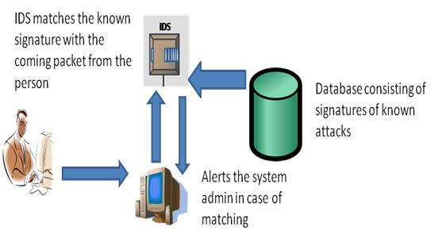
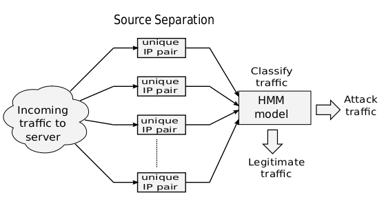

BMS Institute of Technology
Yelahanka, Bangalore-560064
Department of Computer Science and Engineering
Presentation
on
“Implementation and Evaluation of Network Anomaly Detection Algorithms ”
Bachelor of Engineering
in
Computer Science and Engineering
By
| Mr. Mahidhar C | 1BY10CS037 |
| Mr. Nitesh A Jain | 1BY10CS047 |
| Ms. Padmavathi K | 1BY10CS048 |
| Mr. Parthasarathy M Alwar | 1BY10CS049 |
Under the guidance of
Mrs. A Mari Kirthima
Asst. Professor,
Deptartment of CSE
The objectives of the project are as follows:
The scope of this project is to survey the openly available machine learning algorithms available in the space of behavioral network anomaly detection and carry out the comparative study. The idea is to understand the current state-of-the-art algorithms in this space and evaluate them on standard benchmark datasets.

